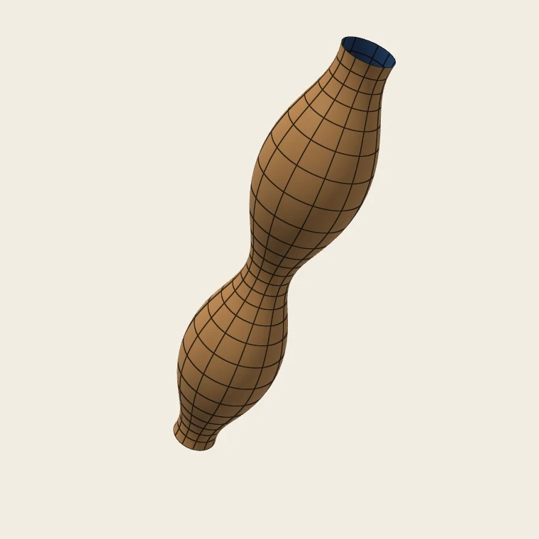
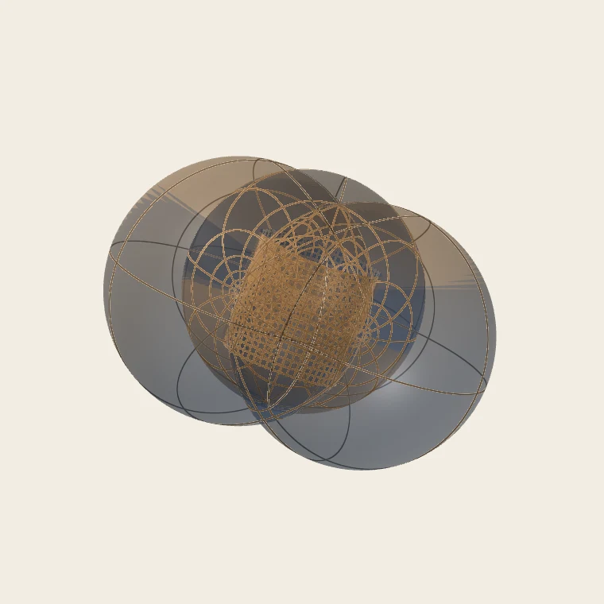
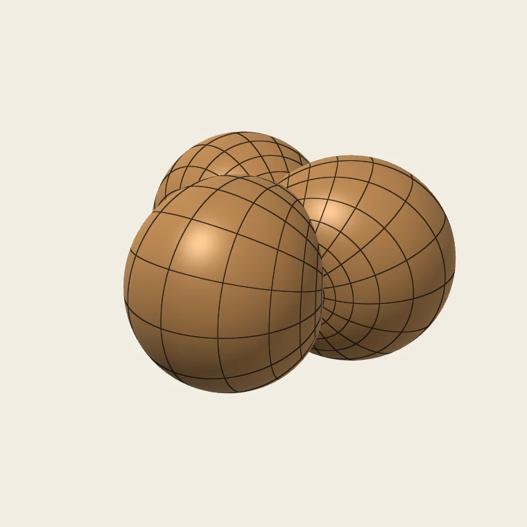
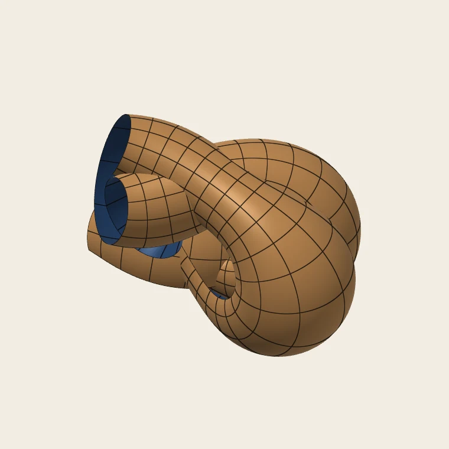

CMC Surfaces from Spectral Data
How the viewer turns a few points in a disc into a surface of constant mean curvature: the spectral curve, the polynomial Killing field, the frame and the Sym–Bobenko formula, and the flows that move between tori.

An unduloid, genus 1
A three-lobed bubbleton
The Wente torus, genus 2
A plane of genus 4Each picture opens in the viewer.
1The idea in brief
A surface in $\mathbb R^3$ with constant mean curvature (CMC) is, in conformal coordinates, a solution of the sinh-Gordon equation with some extra data. That equation is integrable. Its solutions come in families depending on a complex number $\lambda$, the spectral parameter, and the solutions of finite type are described by an algebraic curve over the $\lambda$-plane. These include every CMC torus. The viewer starts from that curve and works back to the surface in four steps.
- Spectral data. Choose $g$ branch points $\alpha_1,\dots,\alpha_g$ in the unit disc and a Sym point $\lambda_0$ on the unit circle. Together they define the spectral curve $\Sigma:\ \nu^2=\lambda\,a(\lambda)$ of genus $g$.
- Killing field. Write down, in closed form, a matrix polynomial $\zeta(\lambda)$ with $-\det\zeta = a(\lambda)/\lambda$. You can then move it around the isospectral torus: the set of all such $\zeta$ for the same curve.
- Integration. $\zeta$ determines a Lax pair $U,V$. The Lax equation $\zeta_z=[\zeta,U]$ and the frame equation $F_z=FU$ are ordinary differential equations along any path in the $z$-plane. Integrate them over a grid.
- Surface. The Sym–Bobenko formula $f=4\,(\partial_\theta F)F^{-1}\big|_{\lambda_0}$ gives the immersion. The Killing field also gives the conformal factor $u$, and from it the Gauss curvature and the principal curvatures.
No theta functions or period matrices are needed, only ODEs. Periods enter only when we ask whether the plane closes up into a cylinder or a torus (§9), and when we deform the curve through families of tori (§10, §11).
2Constant mean curvature
Let $f:\Omega\subset\mathbb C\to\mathbb R^3$ be a conformal immersion with coordinate $z=x+iy$, unit normal $N$ and metric $4e^{2u}|dz|^2$. Its Hopf differential is $Q\,dz^2$ with $Q=\langle f_{zz},N\rangle$. The Codazzi equation says that the mean curvature is constant exactly when $Q$ is holomorphic. The surfaces here have no umbilics, so $Q$ never vanishes. On the planes built from spectral data it is in fact constant, and we scale $z$ so that $|Q|=1$.
Normalise the mean curvature to $H=\tfrac12$. The Gauss equation then becomes the elliptic sinh-Gordon equation
Conversely, every solution $u$ together with a unimodular $Q$ gives a CMC immersion, unique up to a rigid motion. The curvatures follow from $u$:
So $K<H^2=\tfrac14$ everywhere, and $K$ is large and negative where $u$ is large and negative.
Replace $Q$ by $\lambda^{-1}Q$ with $|\lambda|=1$. The Gauss and Codazzi equations still hold, so there is a circle of surfaces with the same metric, the associated family. That circle is where the spectral parameter comes from: the construction below produces a frame for every $\lambda$ at once, and $\lambda_0$ picks one member of the family.
3Spectral data
Take branch points $\alpha_1,\dots,\alpha_g$ with $0<|\alpha_i|<1$, and set
Its roots are the $\alpha_i$ and their reflections $1/\bar\alpha_i$ in the unit circle. This reflection symmetry is the reality condition. On the circle,
The spectral curve is the hyperelliptic curve
$$\Sigma:\quad \nu^2=\lambda\,a(\lambda).$$It has $2g+2$ branch points, $0$, $\infty$, the $\alpha_i$ and the $1/\bar\alpha_i$, so it has genus $g$. Along with the Sym point $\lambda_0$, only one more number is needed:
$$\kappa_0=2\sqrt{|a(0)|}=2\prod_i|\alpha_i|^{1/2}.$$Rotating all the $\alpha_i$ and $\lambda_0$ by a common phase gives the same surface, with the $z$-plane rotated, so one real parameter is redundant. The first few genera are familiar:
- $g=0$: $a\equiv-1$, and the surface is the round cylinder of radius 1 for every $\lambda_0$.
- $g=1$: the surfaces of revolution (Delaunay's unduloids and nodoids) and their helicoidal relatives, the “twizzlers”. Here $u$ depends on one variable only.
- $g\ge2$: genuinely two-dimensional solutions, among them Wente's tori at $g=2$.
4Polynomial Killing fields
A polynomial Killing field for $\Sigma$ is a Laurent polynomial in $\lambda$ with values in $\mathfrak{sl}(2,\mathbb C)$,
$$\zeta(\lambda)=\sum_{k=-1}^{g}\zeta_k\lambda^k=\begin{pmatrix}A&B\\ C&-A\end{pmatrix},$$with $A$ of degree $0,\dots,g-1$, $B$ of degree $-1,\dots,g-1$ and $C$ of degree $0,\dots,g$. It satisfies two conditions:
The reality condition says that $\lambda^{-(g-1)/2}\zeta$ takes values in $\mathfrak{su}(2)$ on the unit circle. The determinant condition says that the eigenvalues of $\zeta(\lambda)$ are $\pm\nu/\lambda$. So the points of $\Sigma$ over $\lambda$ are the eigenvalues of $\zeta(\lambda)$, and each point comes with an eigenline.
The Lax pair
The lowest two coefficients of $\zeta$ (and, by reality, the top two) determine a pair of $\lambda$-dependent matrices:
Here $V$ is the reflection of $U$: $V(\lambda)=-U(1/\bar\lambda)^\dagger$. The Killing field moves over the $z$-plane by the Lax equations
These flows preserve the degree structure, the reality condition and $\det\zeta$, and they commute. This is the Adler–Kostant–Symes picture: the flows are linear on the Jacobian of $\Sigma$. They are compatible with the frame equation
Along any path, $\zeta(z,\lambda)=F(z,\lambda)^{-1}\,\zeta(0,\lambda)\,F(z,\lambda).$ Since $\zeta$ only changes by conjugation, its eigenvalues cannot change: the spectral curve is the same at every point of the plane.
The zero-curvature condition for $U$ and $V$ is the sinh-Gordon equation for
Only $\zeta_{-1},\zeta_0$ and their mirrors enter $U$ and $V$. The higher coefficients are what close the system. A solution admits such a polynomial Killing field precisely when it is of finite type, and every CMC torus is of finite type (Pinkall–Sterling, Hitchin).
5A first Killing field
To start the integration we need one $\zeta$ with the right determinant. Write $b(\lambda)=\lambda B(\lambda)$, a polynomial of degree $g$. Reality forces $C=-b^\sharp$, where $b^\sharp(\lambda)=\lambda^g\,\overline{b(1/\bar\lambda)}$ reverses and conjugates the coefficients. The determinant condition becomes a factorisation problem of Fejér–Riesz type:
Choose $A$, which is $g$ real parameters, small enough that $|A|\le\prod_i|\lambda-\alpha_i|$ on the unit circle. Then the roots of $q$ come in pairs $\rho_j$, $1/\bar\rho_j$, and $b=\beta\prod_j(\lambda-\rho_j)$ takes the roots inside the disc. The simplest choice, $A=0$, gives $q=-a$ and a Killing field in closed form:
The phase of $\beta$ is a gauge choice: it rotates the surface in space.
The eigenline divisor
A convenient label for a Killing field is the set of points of $\Sigma$ where its eigenline is $\mathbb C\,(0,1)^T$. These are the $g$ points
For $\zeta^{\rm base}$ the divisor is just $\{\alpha_j\}$. As $\zeta$ moves over the plane, its divisor moves over $\Sigma$, generally leaving the unit disc.
6The isospectral torus
The Killing fields with a given spectral curve form a real $g$-dimensional torus, the real part of the Jacobian of $\Sigma$. Different points of it give different surfaces with the same spectral curve. The torus is swept out by a hierarchy of commuting flows, which extend the $x$- and $y$-flows. For $k\ge0$ and $c\in\mathbb C$, let $W_k$ be the "π-projection" of $\kappa_0^{-1}\lambda^{-k}\zeta$ (its negative powers and a triangular part of the constant term), and set
where $R(X)(\lambda)=-X(1/\bar\lambda)^\dagger$ is the reflection. The case $k=0$ gives back the $x$-flow ($c=1$) and the $y$-flow ($c=i$). The pairs $(k,1),(k,i)$ with $0\le k<g/2$, plus $((g-1)/2,\,i)$ when $g$ is odd, give $g$ independent directions. The viewer reaches a point of the torus by flowing $\zeta^{\rm base}$ along each of them in turn, for times $\tau_1,\dots,\tau_g$. Since the flows commute, the order doesn't matter.
Two of these directions are the translations of the domain, so for $g\ge2$ only $g-2$ of the times change the shape of the surface. The times are not angles: the flows are linear on the torus but generically not periodic.
7The frame and the Sym–Bobenko formula
For $|\lambda|=1$ the frame $F(z,\lambda)$ lies in $SU(2)$. Identify $\mathfrak{su}(2)$ with $\mathbb R^3$ by the orthonormal basis
With $\lambda=e^{i\theta}$, the Sym–Bobenko formula gives the immersion and its normal at the Sym point:
So the viewer never needs $F$ for other values of $\lambda$. It integrates $F$ and $G$ at $\lambda_0$ alongside $\zeta$. If $X$ is the generator of the step ($U+V$ for $x$-steps, $i(U-V)$ for $y$-steps), the system is
The initial values are $\zeta^{\rm init}$, $F=I$ and $G=0$. The result has $H=\tfrac12$ with respect to $N$, metric $4e^{2u}|dz|^2$, and Hopf differential
$$Q=-\,e^{i\arg a(0)}/\lambda_0 .$$Because $Q$ is constant, the curvature lines in the $z$-plane are the straight lines in the directions $e^{i\phi}$ and $ie^{i\phi}$, with $\phi=-\tfrac12\arg Q$.
8Numerics
The whole computation is a set of small ODEs: $2(g+2)$ matrices for $\zeta$, plus two $2\times2$ matrices for $F$ and $G$. The flows commute, so the result at a grid point doesn't depend on the path taken to reach it. The viewer integrates along one horizontal line of the grid, then up and down each vertical line.
- Steps. By default this is classical Runge–Kutta, with the step bounded by the Accuracy setting. Where the conformal factor varies over many orders of magnitude, fixed steps are wasteful: this happens near a branch point close to 0, as in bubbletons and the corner of §11. There the viewer switches to an error-controlled Dormand–Prince 5(4) method with tolerance $10^{-9}$, and the status line says adaptive steps. The Adaptive accuracy option forces this.
- Mesh. While you drag, a coarse 72 × 72 preview is computed. Afterwards the full mesh is computed, with its rows and columns placed by the preview's metric so that they are dense where the surface is large. The work runs in a Web Worker, and a newer request always replaces a stale one.
- Checks. $\det\zeta=-a/\lambda$, the reality condition and $F\in SU(2)$ are invariants of the exact flow and serve as error checks. The formulas were checked in an independent Python implementation by finite differences on the mesh: $|f_x|=|f_y|=2e^u$, $f_x\perp f_y$, $H=\tfrac12$ and the sinh-Gordon equation. The JavaScript is tested against that implementation.
- Scale. $u$ is bounded on each surface but can be large when some $|\alpha_i|$ is small. So a fixed $z$-domain can give a very large or very small surface, and the view is framed by the bounding box.
9When does the plane close up?
Every surface in the viewer is an immersed plane. It closes into a cylinder or a torus only for special data. Deciding which needs the periods of certain meromorphic differentials on $\Sigma$.
The differentials Θ
For a displacement $w\in\mathbb C$ in the $z$-plane, let $\Theta_w$ be the unique differential of the form
with double poles at $0$ and $\infty$ of the prescribed principal parts $d\big(\tfrac{w}{\kappa_0}\tfrac{\nu}{\lambda}\big)$ and $d\big(\tfrac{\bar w}{\kappa_0}\tfrac{\nu}{\lambda^g}\big)$, and with purely imaginary periods over every cycle. If $w$ is a period of the solution, then $\Theta_w=d\log\mu_w$, where $\mu_w$ is the eigenvalue of the monodromy
$$M_w(\lambda)=F(z+w,\lambda)\,F(z,\lambda)^{-1}.$$The map $w\mapsto\Theta_w$ is real-linear, so everything is spanned by two differentials, with polynomials $p^{(1)}$ and $p^{(i)}$.
The closing conditions
- Intrinsic periods. $w$ is a period of $u$ (and of $\zeta$) exactly when $\oint_\gamma\Theta_w\in2\pi i\,\mathbb Z$ for every cycle $\gamma$. These $w$ form a group $\Gamma$, and $u$ is doubly periodic when $\Gamma$ is a lattice.
- Closing in $\mathbb R^3$. For generators $w$ of $\Gamma$ we also need two things.
- No translational period: $p_w(\lambda_0)=0$. By linearity, for a torus $\lambda_0$ must be a common root of $p^{(1)}$ and $p^{(i)}$ on the unit circle.
- No rotational period: $\mu_w(\lambda_0)=\pm1$, where $\log\mu_w(\lambda_0)=\int_{\alpha_1}^{\lambda_0}\Theta_w$ modulo $\pi i$.
The periods are computed on the loops of the figure in §3, around $\{0,\alpha_j\}$ and around $\{\alpha_j,1/\bar\alpha_j\}$. The square root $\nu$ is tracked by continuity, and the quadrature is refined near the other branch points. Integrals along the unit circle use Gauss–Legendre panels graded towards the branch points close to it. The reality condition relates the two kinds of cycle. For even $g$ the conditions on the $g$ B-cycles are enough. For odd $g$ they are dependent, and all $2g$ cycles are used.
Examples
- Delaunay surfaces ($g=1$). The surface closes into a surface of revolution when $\alpha$ lies on the diameter through $\lambda_0$. With $\alpha=re^{i\varphi}$, the choice $\lambda_0=-\alpha/|\alpha|$ gives an unduloid, with neck and bulge radii $\tfrac{2r}{1+r}$ and $\tfrac{2}{1+r}$. The choice $\lambda_0=+\alpha/|\alpha|$ gives a nodoid, with radii $\tfrac{2r}{1-r}$ and $\tfrac{2}{1-r}$. As $r\to1$ the unduloid tends to the cylinder, and as $r\to0$ to a chain of spheres. In genus 1 the λ-plane draws this diameter dashed, and the branch point snaps onto it.
- Bubbletons. A double branch point $\alpha_1=\alpha_2=\lambda_0\big(k-\sqrt{k^2-1}\big)^2$, $k\ge2$, sits at a resonance point of the cylinder, where its monodromy is $\pm I$. It adds $k$ lobes to the round cylinder. The curve is singular, but the Killing-field construction doesn't mind.
- The Wente torus. The first immersed CMC torus, found by Wente in 1986. It has spectral genus 2, with McIntosh's branch points refined by Newton's method on the closing conditions. Its lattice $\Gamma$ is rhombic. The monodromy along one generator is a rotation of order three, so the torus needs three copies of the lattice's fundamental domain.
10Whitham deformations
Tori are rare. The closing conditions cut out a set of lower dimension in the space of spectral data, so moving branch points at random immediately destroys a torus. Whitham deformations move the spectral curve while keeping (some of) the periods of the differentials $\Theta$, so they can follow families of tori. The viewer has two of them.
The τ-flow (Hasse–Ogilvie–Schmidt)
Let $B_a$ be the space of differentials $\Theta_w$, with polynomials $p_w$. Its period plane is the image of the real-linear period map $w\mapsto(\operatorname{Im}\oint_{B_j}\Theta_w/2\pi)_j$. The deformation keeps this plane together with its complex structure fixed. In coordinates, write $L(w)_j=\operatorname{Re}(\ell_j w)$. The plane with its complex structure is the complex line $[\ell]\in\mathbb{CP}^{g-1}$, and the flow is
The lattice of periods of the sinh-Gordon solution keeps its conformal type and only scales, $\Gamma(t)=\Gamma(0)/z(t)$. The rotation freedom is fixed by keeping $\arg a(0)$, so $\lambda_0$ and the curvature directions stay put. The result is a curve through the space of spectral data, traced by predictor–corrector continuation.
Along it the Willmore functional, in the notation of the paper,
$$\mathcal W=2i\operatorname*{Res}_{\lambda=0}\,q_{b_2}\,\Theta_{b_1}$$serves as the parameter. Its critical points are exactly where the differentials acquire a common root on the unit circle, which is the translational closing condition of §9.
11The root-preserving flow
Let $\mathcal S^g$ be the set of spectral data whose differentials all vanish at a common point $\lambda_0$ of the unit circle. On it the translational closing condition holds for every direction at once. Carberry, Kilian, Klein and Schmidt study the Whitham deformations that keep both the periods and this common root. For $g=2$ the flow is two-dimensional. Its natural coordinates are the Sym integrals: take the basis $b_1,b_2$ of the differentials whose B-periods are $2\pi i\,\delta_{kl}$, and set
where $y_0$ lies over $\lambda_0$ and the path runs once around the real part of $\Sigma$ over the unit circle. The rotational closing condition then says exactly that both $\varphi_l$ are rational multiples of $\pi$.
For genus 2 their theorem is as clean as one could hope. The map $(\varphi_1,\varphi_2)$ is a diffeomorphism from $\mathcal S^2_{\lambda_0}$ onto the open triangle
and the tori with Sym point $\lambda_0$ are exactly the points of $(\pi\mathbb Q)^2$ inside it. The Wente family, the data with real coefficients, is the diagonal $\varphi_1=\varphi_2$. The three-lobed Wente torus sits at $(\pi/3,\pi/3)$.
The viewer doesn't integrate this flow as an ODE. Since $\varphi$ are coordinates, reaching a target $\varphi$ is a root-finding problem in the branch points: pin the common root at $\lambda_0$, set $\varphi$ equal to the target, and solve by Gauss–Newton. The target is approached along a straight path in small steps, so the solution stays on one branch. The flows commute, so there is no holonomy: a closed loop in the triangle brings the branch points back where they started.
At the edges of the triangle the data degenerate. Towards the hypotenuse the branch points approach the unit circle. At the corner $\varphi=0$ both branch points run into 0. There $\varphi$ grows like $\sqrt{|\alpha|}$, the period lattice shrinks at the same rate, and the conformal factor develops sharp bubbles. Suitably rescaled, such sequences of tori converge to minimal surfaces (Carberry–Klein–Schmidt).
Higher genus
In even genus $g\ge4$ the same construction applies, with one more constraint. The B-periods of the differentials now span a plane in $\mathbb R^g$ rather than all of $\mathbb R^2$, and the Whitham deformation keeps that plane fixed. That is $2(g-2)$ more equations, and the flow is still two-dimensional. There is no canonical basis any more. The viewer takes $b_1,b_2$ with period vectors orthonormal in the plane, oriented so that $\varphi$ starts out positive; another basis changes $\varphi$ by a linear map. Whether $\varphi$ is a global chart is not known, and numerically it is not: from the data we have tried, $\varphi$ folds over within a few hundredths of $\pi$, and there the flow stops even though the branch points are well inside the disc. For odd $g$ the part of $\Sigma$ over the circle is two closed curves, the integral around it is a period, and a definition of $\varphi$ is open.
12At the edges of the disc
- $|\alpha_i|\to1$. A branch point meets its reflection on the unit circle and $\Sigma$ acquires a double point. The surfaces still make sense; the unduloid, for example, tends to the cylinder. But the periods become harder to compute, and the viewer keeps $|\alpha_i|\le0.999$ (and $\le0.98$ while tracing a τ-family).
- $\alpha_i\to0$. Then $a(0)\to0$, $\kappa_0\to0$ and $u$ is unbounded. The surfaces break up into sphere chains, bubbletons and bubbles. This limit is where the adaptive integrator and the carried domain matter.
- $\alpha_i=\alpha_j$. The curve is singular, but the formulas for the base Killing field are unaffected; this is how bubbletons arise.
- $\lambda_0$ off the circle. Then $F$ is not $SU(2)$-valued and $f$ leaves $\mathbb R^3$. Two distinct Sym points $\lambda_1\ne\lambda_2$ on the circle would instead give CMC surfaces in $S^3$, via $f=F(\lambda_1)F(\lambda_2)^{-1}$. The viewer doesn't do this.
13References
- H. C. Wente, Counterexample to a conjecture of H. Hopf, Pacific J. Math. 121 (1986), 193–243.
- U. Pinkall and I. Sterling, On the classification of constant mean curvature tori, Ann. of Math. 130 (1989), 407–451.
- N. J. Hitchin, Harmonic maps from a 2-torus to the 3-sphere, J. Differential Geom. 31 (1990), 627–710.
- A. I. Bobenko, All constant mean curvature tori in R³, S³, H³ in terms of theta-functions, Math. Ann. 290 (1991), 209–245.
- F. E. Burstall, D. Ferus, F. Pedit and U. Pinkall, Harmonic tori in symmetric spaces and commuting Hamiltonian systems on loop algebras, Ann. of Math. 138 (1993), 173–212.
- N. Ercolani, H. Knörrer and E. Trubowitz, Hyperelliptic curves that generate constant mean curvature tori in R³, in Integrable Systems (Luminy 1991), Progr. Math. 115, Birkhäuser (1993).
- I. McIntosh, Harmonic tori and their spectral data, Adv. Stud. Pure Math. 51 (2008), 285–314; arXiv:math/0407248.
- M. Knopf, R. Peña Hoepner and M. U. Schmidt, Solutions of the sinh-Gordon equation of spectral genus two and constrained Willmore tori I, arXiv:1708.00887.
- N. Hasse, R. Ogilvie and M. U. Schmidt, Solutions of the sinh-Gordon equation of spectral genus two and constrained Willmore tori II, preprint.
- E. Carberry, M. Kilian, S. Klein and M. U. Schmidt, The space of genus two spectral curves of constant mean curvature tori in R³, arXiv:2110.00436.
- E. Carberry, S. Klein and M. U. Schmidt, Blowing up sequences of constant mean curvature tori in R³ to minimal surfaces, arXiv:2110.01574.